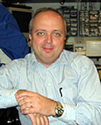

February 24, 2004: Treating Damaged Tissues: Two Approaches
Part 1: Morphogenesis and Regenerative Medicine (page 1)
Part 2: Organ Transplantation
Presentation
Berg Lecture, 2/24/04
Readings
Erin, C. A., Harris, J. "An Ethical Market on Human Organs" J. Med. Ethics 2003,29: 137-138. (protected)
Friedlaender, M. M. "The Right to Sell or Buy a Kidney: Are We Failing Our Patients?" The Lancet 2002, 359, 971-973. (protected)
Cronin, D. C., Millis, J. M.; Siegler, M. "Transplantation of Liver Grafts From Living Donors into Adults¿Too Much, Too Soon" N. Engl. J. Med. 2001, 344, 1633-1637. (protected)
"Xenotransplantation: One Trotter Forward, One Claw Back" The Lancet 2000, 356, 1049-1050. (protected)
Questions
As has been well described in the lay press following the death of a living liver donor in NYC in 2002, donating part of one's liver or a kidney is not without potential complications; physical, emotional, and financial. Imagine that a member of your family is in need of a life saving liver transplant. Discuss your view of the balance between benefits to recipient of your gift of an organ and the potential risks that you might experience as a result of proceeding to serve as a living liver donor.
To date, many of the major advances in the field of transplantation have been funded by governmental agencies such as the National Institutes of Health or private foundations. The pool of research funding to support such research, is of necessity, limited in size. Given the practical limits on funding of such research, assume that major funding could be provided to fully support only one area to expand the number of recipients served by transplantation. Given the material available in the lecture and readings, discuss whether you would favor supporting funding plans for conscription of donors (mandatory donation), expansion of living donor liver transplants, pursuit of xenotransplantation or further development of stem cell biology related to organ replacement.
Additional Resources
UVA Hepatology Clinic
UVA C. O. Strickler Transplant Center
DHCoE news (includes NPR & living donor links)
United Network for Organ Sharing
The Organ Procurement and Transplant Network
<< page 1 | page 2
|
Speakers
|
Carl Berg, M.D., Professor of Medicine
Carl L. Berg, M.D. is Associate Professor in Medicine, Director of Hepatology and Medical Director of Liver Transplantation at the University of Virginia. He received his B.A magna cum laude ...
more > |

|
Douglas W. DeSimone, Professor of Cell Biology
Prof. Douglas W. DeSimone is a Professor in the Department of Cell Biology at the University of Virginia School of Medicine and Associate Director of the Morphogenesis and Regenerative Medicine (MRM) Institute ...
more > |

|
|